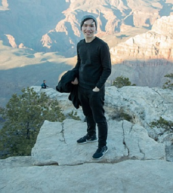

Main
Statistics
Machine Learning
Deep Learning
Resume
Contact
Getting to know me through some of my
PASTIMES
I'm happy to connect if you share the same interests or curious about my current projects
Github
Facebook
Instagram
LinkedIn
Email
I love football and I have worked on some projects involving scorelines prediction and exploitation of betting market inefficiencies. I categorically refuse to use the word 'soccer.'Fanwise, I'm a
Gooner
with a special place in my heart for the 'Little Mozart' Tomas Rosicky.
I dance. You may find some Youtube footage of me trying out ballroom, Kpop or breaking.
Though I like listening to Kpop music and watching dance performances, the only artist I follow is IU (이지은).

Travelling is a big part of me. I am fortunate to have travelled to almost all continents (with the exception of Europe) with more than 20 countries. I am grateful for the friendships I have found through these journeys.
Some of my favorite readings come from O.Henry, Anton Chekhov, George Orwell, Francis Fukuyama and Thomas Friedman
I'm working on some projects related to Markovian model for football, stochastic games and applications of computational tools in portfolio management.
{kind=link}
{kind=link}
{kind=link}
{kind=link}
{kind=link}
{kind=link}